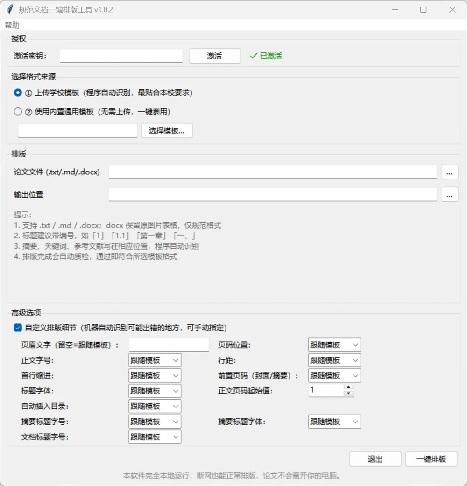

这是什么
把任意格式的论文（Word / Markdown / 文本）排成符合规范要求的 Word 文档： 自动解析学校模板的格式规则（字体/字号/页边距/标题层级），一键排版，自动质检，并生成改动报告。
功能
- 任意学校模板自适应：上传学校模板自动识别格式
- 改写式排版：图片/表格/公式原样保留，只规范格式
- Markdown 增强：表格、代码块、LaTeX 公式转 Word 原生公式
- 自动质检 + 改动报告：排完自动检查，改了啥一目了然
- 完全本地运行：论文不离开你的电脑，断网也能用
效果




开源
排版引擎核心已开源：
github.com/huojian17-star/DocFormatTool ⭐ 欢迎 Star / 提建议 / 交流
获取与联系
软件内测中，想试用请私信 B站 @BEST-辣椒 或评论区留言，免费测试。